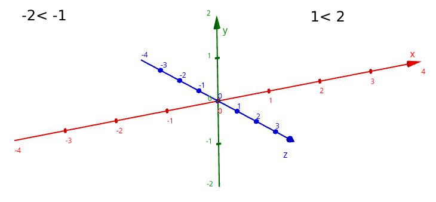
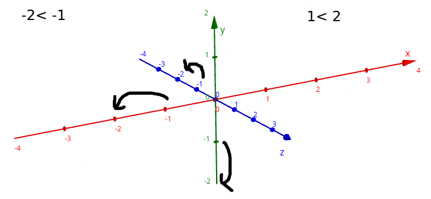

-
int
Numeros enteros positivos y negativos como: 3, -4,
0
-
float
Numeros decimales positivos y negativos como: 3.4, -4.2, 2.0
-
String
texto(se pueden usar '' o "" para representar
strings) como: 'hola, me como los mocos', "2 + 2",
'sandra'
-
Vector2
2 valores (x,y) como: Vector2(20,30), Vector2(3,-2),
Vector2(1,-4)
2 maneras de asignar variables con Vector2
-
var lemon: Vector2 = Vector2(3,4)
-
var lemon: Vector2
lemon.x= 3
lemon.y=
4
-
Vector3
3 valores (x,y,z) como: Vector3(20,30,-1), Vector3(3,-2,10), Vector3(1,-4,0)
2 maneras de asignar variables con Vector3
-
var lemon: Vector3 = Vector2(3,4,-2)
-
var lemon: Vector3
lemon.x= 3
lemon.y=
4
lemon.z= -2
-
bool
verdadero o falso o comparison operators que se usa para regresar verdadero o falso como: true, 2 > 4,
false
comparison operators(funcionan igual que matematica):
-
>(más grande que)
ejemplo:
2>4(2 es más grande que 4)
resultado=false
-
<(menor que)
ejemplo:
2<4(2 es menor que 4)
resultado=true
-
==(igual que)
ejemplo:
2==2(2 es igual a 2)
resultado=true
-
>=(más grande que o igual que)
ejemplos:
2>=2(2 es igual o mayor a 2)
resultado=true
2>=3(2 es igual o mayor a 3)
resultado=false
-
<=(menor que o igual que)
ejemplos:
2<=2(2 es igual o menor que 2)
resultado=true
2<=3(2 es igual o menor que 3)
resultado=false
las comparaciones funcionan como matematicas(los numeros positivos mientras mas lejos del 0 son
considerados mayores mientras que los numeros negativos mientras más lejos del 0 son considerados más
menores)

2 > 1 > -1 > -2(2 es mayor que 1, 1 es mayor que -1, -1 es mayor que -2)

esto es importante porque vas a poder usar estas comparaciones para comparar la posicion de algo con la
posicion de otra cosa(por ejemplo la posicion de un Node3D con la posicion de otro node3D como Nodo1.globalposition.x < Nodo2.globalpositon.x)
not invierte el bool
not true convierte el true en false
not false convierte el false en true
-
Array
lista de valores(los valores pueden ser cualquier tipo.. Incluso otros Arrays o Dictionaries) con orden de
0 hasta el infinito
var frutas: Array = ["banana","manzana", "naranja"]
#indice 0 = "banana"
#indice 1 = "manzana"
#indice 2 = "naranja"
#[indice:int] accede el valor especifico de ese Array asi que esto va a imprimir
"manzana"
print(frutas[1])
-
Dictionary
lista con pares de {llaves:valores}(la llaves puedn ser bool, int o String mientras que los valores pueden ser de
cualquier tipo de variables, incluso Arrays y Dictionaries)
var comida1: Dictionary = {"nombre": "manzana", "color": "rojo", "saludable": true }
#llave "nombre" = "manzana"
#llave "color" = rojo
#llave "saludable" = true
#[llave] accede el valor de la llave asi que va a imprimir "rojo"
print(frutas["color"])